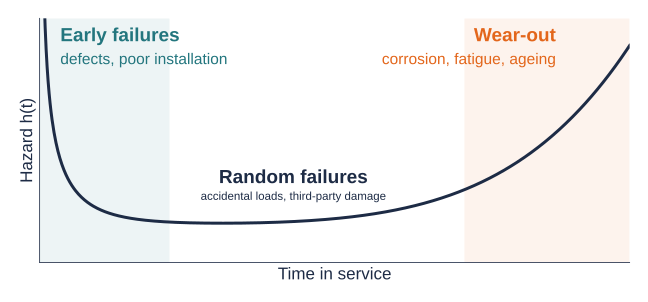
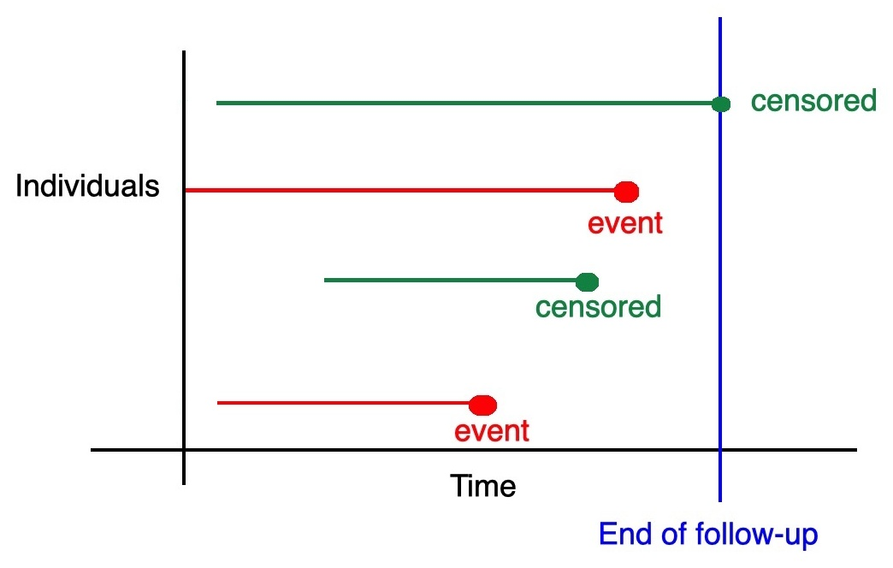
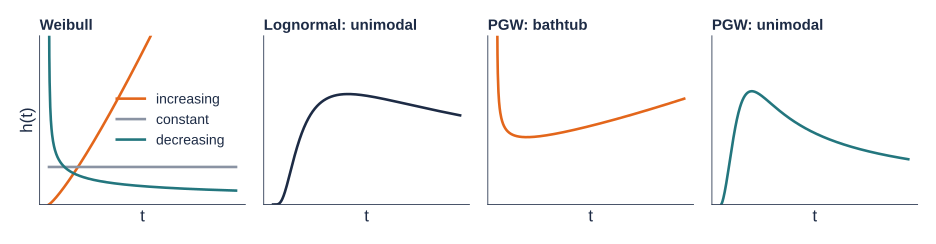

An overview of survival analysis for engineers
Department of Statistical Science, University College London
Survival analysis is used in medicine, epidemiology, genetics, biology, and engineering, where it is usually called reliability analysis. The mathematics is the same.
The outcome is a duration: how long until something happens.
We rarely observe every failure. Some assets are still in service when we stop watching.
\[ S(t) = P(T > t) \]
The probability that a component is still working beyond time \(t\).
Assets are exposed to many forces of failure: ageing, corrosion, fatigue, overloading, floods, accidental damage…
The hazard quantifies these forces at each time point \(t > 0\), among the items that have survived so far (Rinne 2014):
\[ h(t) = \lim_{dt \to 0} \frac{P(t \le T < t + dt \mid T \ge t)}{dt} = \frac{f_T(t)}{S_T(t)}, \]
where \(f_T(t)\) is the probability density function of \(T\). Instantaneous Failure Rate
Homework (suggested)
Show that \(h(t) = f_T(t)/S_T(t)\). Then show that \(S_T(t) = \exp\{-H(t)\}\), where \(H(t) = \int_0^t h(u)\,du\) is the cumulative hazard.

The classic bathtub curve: different mechanisms dominate at different stages of an asset’s life. Estimating the hazard shape from data helps decide when to inspect, maintain, or replace.
Censoring can be due to the end of the study period, an asset removed for other reasons (e.g. road realignment), or lost records.

Don’t throw censored items away
Dropping them, or treating them as failures, biases lifetime estimates. A censored item still tells us it survived at least until \(t_i\).
We often know more about each item: covariates \(\mathbf{x}_i = (x_{i1}, \dots, x_{ip})^\top\).
| Covariate | Example |
|---|---|
| Material | cast iron, ductile iron, PVC |
| Geometry | pipe diameter, slab thickness |
| Environment | soil corrosivity, freeze–thaw cycles |
| Loading | traffic volume, operating pressure |
The key question: how should covariates change the hazard function?
Covariates multiply the hazard.
\[h(t \mid \mathbf{x}) = h_0(t)\, e^{\mathbf{x}^\top\beta}\]
The hazard ratio \(e^{\beta}\) is the same at every time.
Covariates speed up or slow down time for the whole lifetime.
\[ \begin{aligned} S(t \mid \mathbf{x}) &= S_0\!\left(t\, e^{\mathbf{x}^\top\beta}\right) \\ h(t \mid \mathbf{x}) &= h_0\!\left(t\, e^{\mathbf{x}^\top\beta}\right) e^{\mathbf{x}^\top\beta} \end{aligned} \]
The idea behind accelerated life testing: harsh conditions make a component “age” faster.
Covariates rescale time inside the hazard only.
\[h(t \mid \mathbf{x}) = h_0\!\left(t\, e^{\mathbf{x}^\top\alpha}\right)\]
Shifts when the risk peaks, without changing its height.
Here \(h_0\) and \(S_0\) are the baseline hazard and survival functions (all covariates equal to zero).
Etezadi-Amoli and Ciampi (1987) and Chen and Jewell (2001) proposed a natural structure that contains all three:
\[ \begin{aligned} h(t \mid \mathbf{x}) &= h_0\!\left(t\, e^{\tilde{\mathbf{x}}^\top\alpha}\right) e^{\mathbf{x}^\top\beta}, \\ H(t \mid \mathbf{x}) &= H_0\!\left(t\, e^{\tilde{\mathbf{x}}^\top\alpha}\right) e^{\mathbf{x}^\top\beta - \tilde{\mathbf{x}}^\top\alpha}, \end{aligned} \qquad \tilde{\mathbf{x}} \subseteq \mathbf{x}. \]
| Constraint | Model |
|---|---|
| \(\alpha = 0\) | PH |
| \(\beta = 0\) | AH |
| \(\alpha = \beta\) (with \(\tilde{\mathbf{x}} = \mathbf{x}\)) | AFT |
// Shared helpers for the interactive slides.
// Baseline: log-logistic with scale lam and shape k (unimodal hazard, not Weibull).
hz = {
const lam = 2, k = 3;
const h0 = t => (k / lam) * Math.pow(t / lam, k - 1) / (1 + Math.pow(t / lam, k));
const H0 = t => Math.log(1 + Math.pow(t / lam, k));
const grid = d3.range(0.01, 8.001, 0.04);
const curves = (a, b) => grid.map(t => ({
t,
h: h0(t * Math.exp(a)) * Math.exp(b),
S: Math.exp(-H0(t * Math.exp(a)) * Math.exp(b - a))
}));
return {grid, curves};
}function hazPanels(a, b, hmax) {
const base = hz.curves(0, 0);
const cov = hz.curves(a, b);
const common = {
width: 540, height: 340, marginLeft: 58, marginTop: 34, marginBottom: 48,
style: {fontFamily: "IBM Plex Sans, sans-serif", fontSize: "17px",
background: "transparent", color: "#1D2B45"},
x: {label: "Time in service, t", domain: [0, 8], labelAnchor: "center"}
};
const refLine = y => Plot.line(base, {x: "t", y, stroke: "#8A93A3",
strokeWidth: 2.5, strokeDasharray: "7,6"});
const covLine = y => Plot.line(cov, {x: "t", y, stroke: "#E3661B",
strokeWidth: 4, clip: true});
const pH = Plot.plot({...common,
y: {label: "Hazard h(t)", domain: [0, hmax], grid: true},
marks: [refLine("h"), covLine("h"), Plot.ruleY([0])]});
const pS = Plot.plot({...common,
y: {label: "Survival S(t)", domain: [0, 1], grid: true},
marks: [refLine("S"), covLine("S"), Plot.ruleY([0])]});
return html`<div class="hz-panels">${pH}${pS}</div>`;
}Set \(\beta = 0\) (the AH model) and move \(\alpha\). The covariate changes the clock inside the hazard.
Set \(\alpha = 0\) (the PH model) and move \(\beta\). The covariate scales the hazard up or down at every time.
A brief catalogue: Gamma, Weibull, Lognormal, Log-logistic, Generalised gamma, PGW, EW, among many others.

Warning
By picking a distribution from the catalogue, we restrict the hazard shapes the model can represent. A Weibull model can never produce a bathtub curve, however much data we collect.
| Distribution | Hazard shapes it can capture |
|---|---|
| Weibull | increasing, decreasing, constant |
| Lognormal, log-logistic | unimodal (up then down) |
| Generalised gamma, PGW, EW | increasing, decreasing, bathtub, unimodal |
Fit several candidates and select with AIC \(= 2k - 2\log \hat{L}\) or BIC \(= k \log n - 2 \log \hat{L}\) (smaller is better; \(k\) = number of parameters). Then check the selected model makes engineering sense.
Think about it
The workflow is identical for engineering data. For a water-main failure record, which covariates might act at the time level (\(\tilde{\mathbf{x}}\)) and which at the hazard level (\(\mathbf{x}\))?
Hazard-based regression models